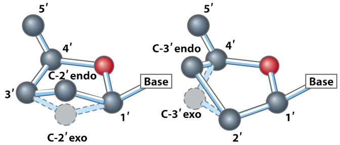

|
|
|
| Forma A | Forma B | Forma Z | |
|---|---|---|---|
| Sentido de giro | dextrorsa | dextrorsa | sinistrorsa |
| Unidad de repetición | 1 pb | 1 pb | 2 pb |
| Rotación/pb | 32.7° | 35.9° | 60° |
| pb/vuelta | 11 | 10.5 | 12 |
| Inclinación entre los pb y el eje | +19° | -1.2° | -9° |
| Avance/pb en el eje | 2.3 Å | 3.32 Å | 3.8 Å |
| Avance/vuelta de la hélice | 28.2 Å | 33.2 Å | 45.6 Å |
| Giro de la hélice | +18° | +16° | 0° |
| Ángulo del enlace glucosídico | anti | anti | C: anti G: syn |
| Anillo de la ribosa  |
C3'-endo | C2'-endo | C: C2'-endo G: C3'-endo |
| Diámetro | 23 Å | 20 Å | 18 Å |
Esta página permite comparar en 3D las tres formas de la doble hélice del DNA. La forma B es la más frecuente en la célula; la forma A es más ancha y compacta, y la forma Z es una hélice sinistrorsa. La tabla resume sus diferencias geométricas.